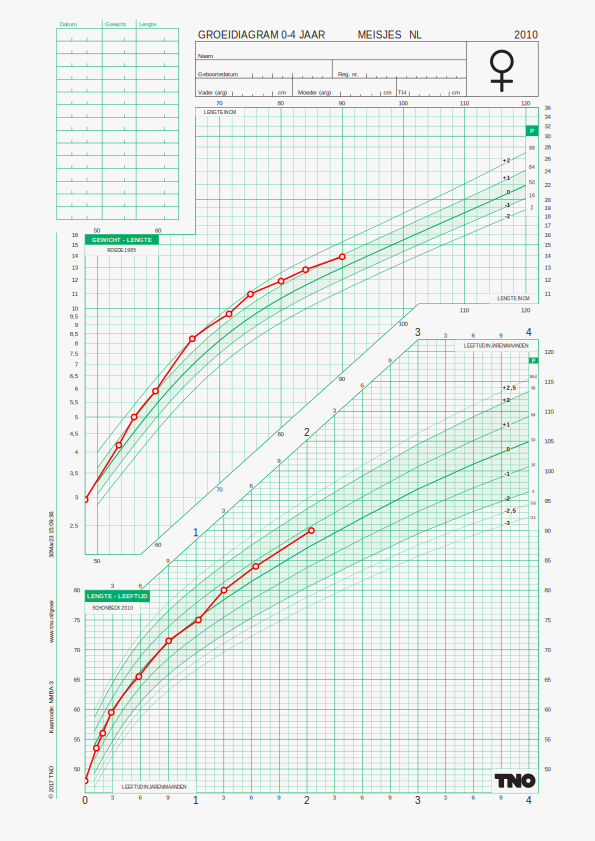
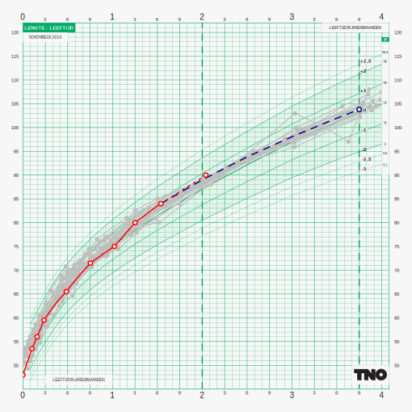

JAMES is a web service designed to support real-time, individual-level decision making in the evaluation and prediction of child growth and development. It integrates seamlessly with electronic youth health care systems in the Netherlands via the standardized Basisdataset JGZ (BDS), and is intended for use by pediatricians, youth health nurses, and other healthcare professionals.
The current version of JAMES:
provides access to high-quality growth charts used in Dutch youth health care;
supports the exchange of data encoded using the Basisdataset JGZ 4.0.1 standard;
screens for abnormal values in height, weight, and head circumference;
transforms developmental milestones into the D-score metric;
predicts future growth and developmental trajectories.
JAMES is implemented as a RESTful API hosted on remote servers. Clients can interact with the service using any HTTP-compatible environment. This documentation illustrates example requests using both R and the command line, and highlights common applications with pointers to additional resources.
The examples in this document use the development and demonstration server, which is intended for testing and educational purposes only. For access to the licensed production environment, please contact TNO license contact olivier.blansonhenkemans [at] tno.nl.
JAMES is developed and maintained by TNO (Netherlands Organisation for Applied Scientific Research).
JAMES API overview
Primary API end points
Verb
API end point
Description
Maps to R function
POST
/data/upload/{dfm}
Upload child data
upload_data()
POST
/charts/draw/{ffm}
Draw child data on growth chart
draw_chart()
POST
/charts/list/{dfm}
List available growth charts
list_charts()
POST
/charts/validate/{dfm}
Validate a chart code
validate_chartcode()
POST
/screeners/list/{dfm}
List available growth screeners
list_screeners()
POST
/screeners/apply/{dfm}
Apply growth screeners to child data
apply_screeners()
GET
/site
Request empty site
request_site()
POST
/site/request/{dfm}
Request personalised site
request_site()
POST
/blend/request/{sfm}
Obtain a blend from multiple end points
request_blend()
POST
/version/{dfm}
Obtain version information
version()
GET
/{session}/{info}
Extract session details
GET
/{2}/{1}/man
Consult R help
help({1}_{2})
The table lists the defined API end points and the mapping to each end point to the corresponding R function in the james package. The API end points are grouped by the type of functionality they provide. The first column indicates the HTTP verb used to access the end point, and the second column provides a brief description of the end point’s purpose.
JAMES is built on top of the OpenCPU API, a powerful and flexible way for online deployment of R functionality. Although it is possible to use JAMES without knowledge of OpenCPU, it is useful to browse the OpenCPU features.
OpenCPU offers multiple output formats out of the box. JAMES supports a subset of these through the /{session}/{info} end point. Here session is a special session code generated by OpenCPU that identifies the server location containing the results of a request. The output format info is one of the following:
{info}
Description
json
Function result as JSON
print
Function result as formatted as print
csv
Function result as comma-separated format
tab
Function result as tab-delimited format
md
Function result as markdown format
svglite
Function result as SVG graph
warnings
Warnings from the R execution
messages
Messages, especially data validation info
console
Console print out, useful for locating errors
stdout
Standard output
info
Overview of JAMES deployment
parent
Parent directory of all OpenCPU session output
In addition, the user can request the function result in a particular form. JAMES distinguishes the following groups of formats.
This section provides a quick introduction into the main JAMES end points, and how these can be assessed from R and from the command line.
/version: Obtain version information
Let us first check whether JAMES is running. The following code makes a simple request to JAMES to see whether it is alive and to return the version number of the underlying james R package. We illustrate both requests in R and in bash.
We first illustrate a method that makes two requests to the server. The following commands call the /version/json end point in the JAMES API.
r <-james_post(host = host, path ="version/json")
We added the /json to the pathname to extract the JSON representation of the result of the R function james::version(). The function result is an object of class james_post and consists of various components.
Most of the element are documented in the response object in the httr package. For example, we could use the call httr::status_code(r) to obtain the status code. The function james_post() adds the last five elements:
r$request_path echoes the endpoint, here /version/json;
r$parsed is a parsed version of the element r$content. Here it is a list of elements like names of the package, its date, and so on. In case of an error of the server function, we find the error message here;
r$warnings contain any warnings thrown during execution;
r$messages contain any messages, e.g. data reading errors;
r$session (like x05e353b79df7c2) is a unique session code.
The jamesclient::james_post() function wraps the basis workhorse httr::POST() that does the actual server request. For illustration, we may obtain equivalent content by the POST function directly.
JAMES understands data that conform to the Basisdataset JGZ 4.0.1 coded as JSON according to a JSON schema. This section explains how we create, validate and upload child data to JAMES.
Let us assume that we have child data stored in JSON format. Here we copy the longitudinal demo data maria.json from the jamesdemodata package into the working directory.
If the status is 201, the data are uploaded to JAMES and processed. For example, the processed data after file upload is available as an R data frame under element r1$parsed.
r1$parsed
$psn
id name dob dobm dobf src sex gad ga smo bw hgtm
1 -1 Maria 2018-10-11 1990-12-02 1995-07-04 1234 female 189 27 1 990 167
hgtf
1 190
$xyz
age xname yname zname zref x y z
1 0.0849 age hgt hgt_z nl_2012_hgt_female_27 0.0849 38.00 -0.158
2 0.1670 age hgt hgt_z nl_2012_hgt_female_27 0.1670 43.50 0.047
3 0.0000 age wgt wgt_z nl_2012_wgt_female_27 0.0000 0.99 0.190
4 0.0849 age wgt wgt_z nl_2012_wgt_female_27 0.0849 1.25 -0.203
5 0.1670 age wgt wgt_z nl_2012_wgt_female_27 0.1670 2.10 0.015
6 0.0849 age hdc hdc_z nl_2012_hdc_female_27 0.0849 27.00 -0.709
7 0.1670 age hdc hdc_z nl_2012_hdc_female_27 0.1670 30.50 -0.913
8 0.0000 age bmi bmi_z nl_1997_bmi_female_nl 0.0000 NA NA
9 0.0849 age bmi bmi_z nl_1997_bmi_female_nl 0.0849 8.66 -5.719
10 0.1670 age bmi bmi_z nl_1997_bmi_female_nl 0.1670 11.10 -3.767
11 0.0000 hgt wfh wfh_z nl_2012_wfh_female_ NA 0.99 NA
12 0.0849 hgt wfh wfh_z nl_2012_wfh_female_ 38.0000 1.25 -0.001
13 0.1670 hgt wfh wfh_z nl_2012_wfh_female_ 43.5000 2.10 0.326
The session details, including the uploaded data, will remain available for a limited time. After 30 minutes the session is wiped. The session key is your entrance to the resource within the 30-minute window. The key can be retrieved as r1$session. For example, to see the result of the file upload session in markdown use
* **psn**:
-------------------------------------------------------------------------------
id name dob dobm dobf src dnr sex gad
---- ------- ------------ ------------ ------------ ------ ----- -------- -----
-1 Maria 2018-10-11 1990-12-02 1995-07-04 1234 NA female 189
-------------------------------------------------------------------------------
Table: Table continues below
-----------------------------------------------------------------------------------
ga smo bw hgtm hgtf agem etn pc4 blbf blbm eduf edum par
---- ----- ----- ------ ------ ------ ----- ----- ------ ------ ------ ------ -----
27 1 990 167 190 NA NA NA NA NA NA NA NA
-----------------------------------------------------------------------------------
* **xyz**:
----------------------------------------------------------------------------------
age xname yname zname zref x y z
-------- ------- ------- ------- ----------------------- -------- ------- --------
0.0849 age hgt hgt_z nl_2012_hgt_female_27 0.0849 38 -0.158
0.167 age hgt hgt_z nl_2012_hgt_female_27 0.167 43.5 0.047
0 age wgt wgt_z nl_2012_wgt_female_27 0 0.99 0.19
0.0849 age wgt wgt_z nl_2012_wgt_female_27 0.0849 1.25 -0.203
0.167 age wgt wgt_z nl_2012_wgt_female_27 0.167 2.1 0.015
0.0849 age hdc hdc_z nl_2012_hdc_female_27 0.0849 27 -0.709
0.167 age hdc hdc_z nl_2012_hdc_female_27 0.167 30.5 -0.913
0 age bmi bmi_z nl_1997_bmi_female_nl 0 NA NA
0.0849 age bmi bmi_z nl_1997_bmi_female_nl 0.0849 8.657 -5.719
0.167 age bmi bmi_z nl_1997_bmi_female_nl 0.167 11.1 -3.767
0 hgt wfh wfh_z nl_2012_wfh_female_ NA 0.99 NA
0.0849 hgt wfh wfh_z nl_2012_wfh_female_ 38 1.25 -0.001
0.167 hgt wfh wfh_z nl_2012_wfh_female_ 43.5 2.1 0.326
----------------------------------------------------------------------------------
<!-- end of list -->
Troubleshooting data upload: JAMES executes checks on the conversion and ranges of the data. To gain efficiency, it does not automatically validate the input data against the specified JSON schema. JAMES writes diagnostic, sometimes cryptic, messages to the directory {session}/messages if it finds a problem. The user can rerun the data upload with two additional flags that request extra diagnostic output.
Example: Suppose we compromise the data by removing the required "clientDetails" and the optional "nestedDetails" sections. The mangled input data look like:
which indicates that the required JSON element "clientDetails" is missing. We inactivated the code chunk above because it may occasionally give the error “JAMES API request failed [400] child process has died In call: tryCatch()” when validate = TRUE. This is a known, not yet resolved issue.
We may drill down further by setting the intermediate = TRUE flag. This writes five JSON files that document the data flow into {session}/files/{*}.json.
For example, we can ask for the input data as read by JAMES by
The validate and intermediate flag are useful for development and debugging. In production, we recommend leaving them at their default value (FALSE) and monitor any messages written to {session}/messages.
We start from child data in the file maria.json that we wish to process with JAMES. For testing purposes, you may change the values, but keep the general structure intact. The following curl commands uploads the file and processes the data.
Maria is a preterm born at 27 weeks of gestational age. We already uploaded her data. We may now plot her growth data on the A4 chart for preterms as follows:
For A4 sized charts, we recommend to generate the plot with query arguments list(height = 29.7/2.54, width = 21/2.54), as illustrated above. If you want to change the chart’s size in your HTML, use the out.width knitr chunk option, e.g. set out.width="500px". This gives the following output.

Laura’s growth plotted on chart for Dutch girls, 0-4 years
JAMES features a built-in prediction module based on curve matching. Suppose we want to predict Laura’s height at the 3y9m when Laura is 2 years old. The following chart plots 25 matches to Laura as grey curves. The variation between the grey curves at age 3y9m indicates the likely variation in the prediction. The blue line indicates Laura’s predicted height at age 3y9m.
For square charts, use query arguments list(height = 18/2.54, width = 18/2.54) to generate the plot. In order to get the same age units as the previous chart, calculate out.width as 500/21*18 = "429px".

Predict Laura’s future height at the age of 3y9m.
Upload maria.json and draw the height data on the default chart to produce an SVG file. Specify the proper width and height query parameters.
JAMES contains a wide variety of built-in growth charts. Each chart has a unique chartcode. A typical chart code looks like NJAA. We obtain the full list of chart codes as
r <-james_post(host = host, path ="charts/list/json")charts <- r$parsed
The charts object is a data frame with ?? rows (charts) and the following variables:
JAMES contains charts for various child populations. There are charts for Down syndrome (DS), Hindustan (HS), Moroccan (MA), Dutch (NL)), preterm (PT) and Turkish (TU) children living in the Netherlands and the WHO Growth Standards (WHOblue, WHOpink). These charts contain references for height (hgt), weight (wgt), head circumference (hdc), weight-for-height (wfh), body mass index (bmi) and D-score (dsc), as well as combined charts with multiple references on A4 format (front, back, -hdc).
The most important index variables are population and side:
There are currently 88 different codes. Codes ending in 31, e.g., 1031 or 2031 indicate normal growth, whereas code ending in 41, 42 and so on, signal that - according to the guidelines - the child should be referred for further investigation.
We get the details for the guidelines for head circumference as
The /screeners/apply end point applies standard screeners to the child data. Invoke the screeners by
r <-james_post(host = host, path ="/screeners/apply/json", session = r1$session)r$parsed
Categorie CategorieOmschrijving Code
1 1000 Lengte 1031
2 2000 Gewicht 2031
3 3000 Hoofdomtrek 3031
CodeOmschrijving
1 Het advies volgens de JGZ-richtlijn lengtegroei is als volgt: In principe geen verwijzing nodig, naar eigen inzicht handelen.
2 Het advies volgens de JGZ-richtlijn overgewicht is als volgt: In principe geen verwijzing nodig, naar eigen inzicht handelen.
3 In principe geen verwijzing nodig, naar eigen inzicht handelen.
Versie Leeftijd
1 1.23.0 0.167
2 1.23.0 0.167
3 1.23.0 0.167
The procedure
calculates, per outcome, the intervals between the most recent measurement and all earlier measurements;
tests whether any of those intervals produces a signal according the screening algorithm;
reports the most recent non-standard signal that indicate abnormal growth.
In the example, all returned codes (1031, 2031, 3031) end in “31”, which signals normal growth. The full table of return codes and messages can be obtained by the /screeners/list end point (see above).
There are several possibilities to visualise and integrate multiple evaluations per curve performed in step 2 into one advice. Before May 2023, JAMES returned an advice for each combination of time point and outcome, but that table presented a lot of output that was difficult to act one. Since May 2023, JAMES reports only one signal per curve.
[
{
"Categorie": 1000,
"CategorieOmschrijving": "Lengte",
"Code": 1031,
"CodeOmschrijving": "Het advies volgens de JGZ-richtlijn lengtegroei is als volgt: In principe geen verwijzing nodig, naar eigen inzicht handelen.",
"Versie": "1.23.0",
"Leeftijd": 0.167
},
{
"Categorie": 2000,
"CategorieOmschrijving": "Gewicht",
"Code": 2031,
"CodeOmschrijving": "Het advies volgens de JGZ-richtlijn overgewicht is als volgt: In principe geen verwijzing nodig, naar eigen inzicht handelen.",
"Versie": "1.23.0",
"Leeftijd": 0.167
},
{
"Categorie": 3000,
"CategorieOmschrijving": "Hoofdomtrek",
"Code": 3031,
"CodeOmschrijving": "In principe geen verwijzing nodig, naar eigen inzicht handelen.",
"Versie": "1.23.0",
"Leeftijd": 0.167
}
]
The /site end point provides interactive site containing all charts, but without child data. This end point is primarily useful to obtain a quick overview of the available charts.
Run the command and paste the generated URL in r$parsed in the address field of your browser. The starting chart is chosen by JAMES and depends on the age of the child.
The /blend/request end point returns the results of multiple end points, and thus functions as a one-stop shop. However, currently it does not support graphics output, so use /{session}/{info}/svglite or /charts/draw/svglite for the charts.
Categorie CategorieOmschrijving Code
1 1000 Lengte 1031
2 2000 Gewicht 2075
3 3000 Hoofdomtrek 3021
CodeOmschrijving
1 Het advies volgens de JGZ-richtlijn lengtegroei is als volgt: In principe geen verwijzing nodig, naar eigen inzicht handelen.
2 Het advies volgens de JGZ-richtlijn ondergewicht is als volgt: Sterke gewichtsafname (-1 SD), advies: Is er sprake van een afwijkende voedingstoestand en/of klachten of symptomen die kunnen wijzen op onderliggende ziekte of problemen? Indien ja, Verwijzen naar kinderarts. Indien nee, dan is er in principe geen verwijzing nodig. Naar eigen inzicht handelen.
3 De richtlijn hoofdomtrek is bedoeld voor kinderen tot 1 jaar.
Versie Leeftijd
1 1.23.0 2.04
2 1.23.0 2.04
3 1.23.0 2.04
Inspect r$parsed to see which other components are returned.